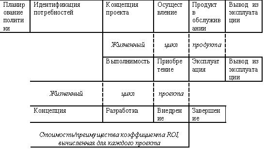
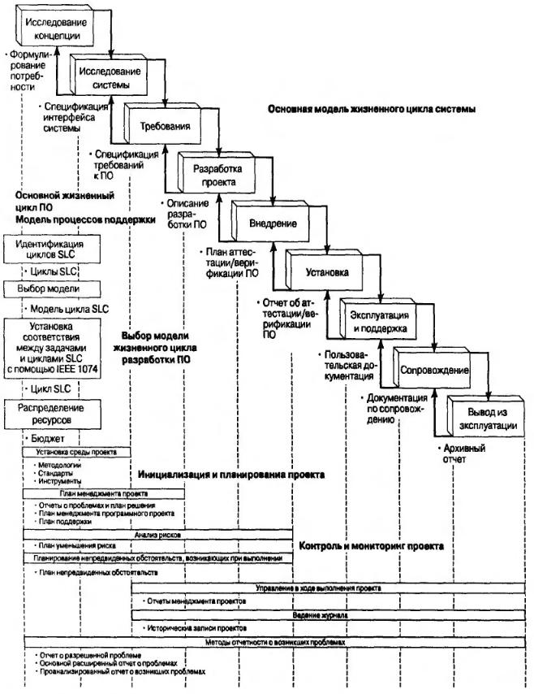
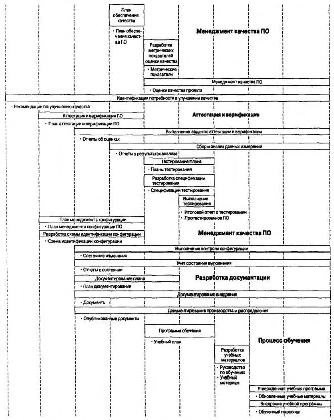

Область действия менеджмента проектов
1. Процессы оценивания.
Определение критериев для выполнения экспертных оценок (обзора). В обзоре описывается действие оценивания или проводится оценка конечных продуктов работы.
1. Cуществуют аспекты контроля качества, на которые должны быть направлены обзоры, такие как стоимость обеспечения качества и подсчет дефектов. Команда разработчиков должна передать обзор только что завершенной фазы перед переходом к выполнению следующей фазы. Внутренний и внешний поставляемые продукты внутри каждой фазы, в дополнение к обзорам продукта в конце фаз, также являются кандидатами на роль обзора. Выполнение ранних обзоров оценок трудозатрат и стоимости приведет к улучшению суммарной подтвержденной оценки стоимости/графика проекта.
2. В состав объектов, которые подлежат обзору, также включены результаты сравнения реальной и оценочной стоимости, реального и оценочного графика, приводится процент завершения проекта, результаты оценки степени риска и многие другие измерительные "барометры" проекта.
3. В процессе оценки формируется основа для постоянной оценки того порядка функционирования в выбранной среде разработки определенных эффективных и подходящих процессов. Обзоры будут сосредоточены на оценке и усовершенствовании производительности, уменьшении времени цикла и других моментах, связанных с выполняемым процессом.
2. Знание стандартов процесса.
Понимание стандартов процесса. Существует ряд стандартов, влияющих на успешную деятельность менеджера проектов. Профессиональные организации предоставляют специальные руководства по реализации тех или иных проектов, анализу, разработке, кодированию, тестированию и т.д.
3. Определение продукта.
Идентификация клиентской среды и требований, связанных с разрабатываемым продуктом.
Менеджер проекта должен быть осведомлен относительно клиентских запросов и общих требований, связанных с разрабатываемым продуктом. При этом продукт определяется как результат усилий команды разработчиков.
Это определение продукта учитывает наличие поставляемых продуктов проекта. При этом описываются стандартные продукты индивидуальной проектной работы, а также связывающие их отношения и планы: менеджмента программных проектов (software project management plan, SPMP), управления рисками, коммуникации, менеджмента конфигурации НО (Sofivvarc configuration management plan, SCM), план обеспечения качества) (software quality assurance plan, SQA) и план тестирования.
После завершения разработки этих планов менеджер проекта, команда разработчиков и клиент будут иметь общее представление относительно определения продукта. Планы создаются согласно шаблонам, предоставленным организациями и стандартами.
4. Оценка альтернативных процессов.
Оценивание различных применяемых подходов, при этом используются методы: выбор жизненного цикла, определение стандартов разработки, основанных на утвержденном техническом задании, целях и возможностях, а также выбор организационной формы.
Проекты уникальны по определению - это та характеристика, которая отличает их от текущих операций. Ввиду этой уникальности каждый проект может иметь различные цели, задачи, стандарты разные жизненные циклы и структуры команды. Наиболее значительная компетенция для менеджеров программных проектов заключается в том, что они должны бать способны оценивать различные альтернативы и выбирать из них наиболее подходящие для каждого проекта.
5. Управление требованиями.
Контроль изменений требований.
Важной и труднейшей частью формирования корректных требований является их форматирование с учетом привлечения всех заинтересованных лиц. Программы контактов, изменение уровня ожиданий, отличие потребностей и многие другие барьеры усложняют работу. Существует несколько методов получения и формулирования реальных требований для спецификации требований к ПО и определения ценности каждого из них.
Методы выявления требований включают: опрос, учет случаев использования и анализ сценария, ролевая игра, работа с архивными документами, формирование опрашиваемых групп, использование разбиения на отдельные фрагменты, создание опытных образцов/моделирование, использование совместной разработки приложений и т.д.
Определение корректных требований является, возможно, наиболее важной частью программного проекта. Существует методика описания разработки документа спецификации требований ПО (Software requirements specification, SRS), начиная с исследовательских действий по предоставлению помощи клиенту в определении его истинных желаний и потребностей.
В связи с рассмотрением данной компетенции будет описан порядок разработки требований, сбора требований с использованием модели объекта, а также представление шаблона SRS с последующей разработкой документа SRS.
6. Управление субподрядчиками.
Планирование, управление и осуществление контроля за деятельностью субподрядчиков.
Процесс разработки и принятия решений:
1. диагностика проблемы,
2. формулировка ограничений и критериев принятия решений,
3. определение альтернатив,
4. оценка альтернатив,
5. выбор альтернатив,
6. реализация и контроль выполнения решений.
Управление субподрядчиками начинается в тот момент, когда менеджер проекта принимает решение о том, что для выполнения проекта или некоторой его части будут заключены субдоговора с другими фирмами. Ясно, что эта компетенция критична для успеха проекта в то время, когда испытывается недостаток ресурса персонала.
Обзор этой компетенции начинается с изучения процесса укомплектования персоналом групп разработчиков проектов. В ней представлены некоторые основные модели индивидуальностей, позволяющие обеспечить подбор персонала для создания высокоэффективной команды, и описаны методики набора персонала и создания таких команд. Они включают идентификацию и понимание индивидуальностей, знание характеристик эффективной команды проекта по разработке ПО, отбор членов команды в рамках определенного процесса, а также заключение контракта при подборе персонала.
Далее рассматривается этап, наступающий после отбора команды разработчиков проекта.
Ресурсы включают персонал, ПО, аппаратные средства, средства поддержки и все, что еще необходимо для выполнения планов проекта. Рассматриваются следующие проблемы:
- использование ресурсов наравне с обобщенными метками;
- балансирование между платежными возможностями и степенью полезности;
- определение методов распределения ресурсов по уровням;
- разработка версий продукта и порядок принятия решений о покупке (создание продукта внутри организации либо закупка имеющегося в наличии коммерческого продукта (commercial-off-the-shelf, COTS);
- заключение субдоговора наравне с разработкой продукта средствами компании.
Каждый менеджер программного проекта должен быть компетентным в основных юридических вопросах, связанных с разработкой ПО. Рассматриваются основные принципы торгового права в применении к контрактам, лицензиям и интеллектуальной собственности, различные проблемные вопросы, касающиеся контрактов, например, о приобретении и идентификации, управлении и защите интеллектуальной собственности (патенты, торговые марки, торговые секреты, авторские права и подготовка торговли).
7. Выполнение начальной оценки.
Оценивание трудностей (при управлении проектом, обеспечении качества ПО, тестировании элементов и систем, управлении конфигурацией, управлении контрактами, коммуникации, генерировании отчетности), рисков, затрат и графика.
Входят задачи по разработке ПО в пределах каждого процесса жизненного цикла разработки продукта.
Ключ к успешному планированию программного проекта - хорошо выполненная оценка. Обычно продолжительность выполнения задачи в области разработки ПО зависит от размера создаваемого программного продукта. Описываются полезные методики оценки, позволяющие выполнить калибровку ПО, включая меры подсчета, и повторное использование ПО.
Также подчеркивается важность понимания методов его оценки. Продолжительность разработки и понесенные при этом затраты можно оценить, имея данные о размере, а также некоторые статистические данные. Подробно описываются существующие элементы оценки стоимости:
- оценка трудозатрат,
- стоимость компонентов,
- точность оценки,
- измерение производительности,
- параметрические модели.
Здесь же описывается, как проанализировать разработанный план рисков, а также создать главный поставляемый продукт проекта- план управления (менеджмента) рисками.
Рассматриваются принципы управления рисками, модели, идентификация рисков. Указывается, где следует искать риски, производится их анализ, описываются инструменты дискретизации, разработка ответных рисков, определение (стоимости и упорядочивание рисков, подготовка плана управления ими, а также периодических отчетов относительно изменений рисков.
8. Отбор методов и инструментов.
Определение процессов отбора.
Применение менеджерами проектов тех или иных методов разработки ПО, технологий и методик и инструментов совместно с методами менеджмента проектов определяет успех или неудачу организации.
При этом следует иметь в виду, что:
метод - это способ, средства или процесс выполнения чего-либо,
инструмент- орудие или механизм, используемый для выполнения работы или решения задачи,
технология - применение научного знания в промышленности или бизнесе.
В этой компетенции обсуждается использование некоторых общих инструментов, доступных для планирования и управления программными проектами. Основное внимание уделяется важным характеристикам инструментов, используемых в процессе, неспецифическим программным продуктам.
Инструменты:
- автоматизированного проектирования и создания программ (Computer aided software engineering, CASE) и в объектно-ориентированных (Object-oriented, ОО), и в структурированных средах;
- оценка размера ПО и инструменты оценки, такие как конструктивная стоимостная модель (Constructive cost model, COCOMO) и SLIM;
- инструменты планирования, отслеживания и контроля проекта, составления графика и отчетов о трудозатратах и равномерного распределения ресурсов. Многие из этих инструментов могут использоваться при работе в Internet.
С самого начала необходимо предусмотреть систему менеджмента конфигурации (Configuration management, CM), причем она должна быть доступной на всех этапах разработки проекта.
Рассматриваются проблемы и основы стандартной системы менеджмента конфигурации программных проектов: принципы, основные требования, планирование и организация, инструменты, а также внутренние и внешние факторы.
9. Подгонка процессов.
Изменение стандартных процессов в целях удовлетворения требований проекта.
Весьма уместно корректировать процессы, процедуры и жизненные циклы с тем, чтобы отвечать определенным требованиям проекта. Обычно подгонка начинается с того, что менеджер проекта выбирает наиболее подходящий для проекта жизненный цикл. Далее рассматриваются характеристики различных жизненных циклов программных проектов, а также содержатся указания по отбору цикла, подходящего для данного программного проекта.
Типичные организационные структуры вряд ли могут применяться по отношению ко всем программным проектам. Поэтому для руководителя менеджера проекта жизненно важным является определение типа организационной структуры, наиболее подходящего для этого проекта, путем изучения рабочей среды. Формы организации, включают использование функционального работника, диспетчера, координатора проекта и матрицу.
Каждая из этих должна быть определена и рассмотрена с точки зрения предоставляемых ею преимуществ и неудобств.
Подгонка проектных процессов и среды должна производиться с учетом всех имеющихся зависимостей.
В этом случае отсутствуют готовые предписания, а имеют место лишь предложения относительно того, каким образом модификация испытанных и истинных методов может принести пользу проекту в целом, т.е. для результативности и эффективности проекта зачастую требуется гибкость и нестандартное мышление.
10. Отслеживание качества продукта.
Отслеживание качества разрабатываемого продукт.
За качество продукта несет ответственность вся команда разработчиков. Менеджер проекта должен распределять процессы таким образом, чтобы контролировать качество продукта по мере его развития на всех этапах жизненного цикла разработки продукта.
(Задача "Идентификация потребностей по улучшению качества" проиллюстрирована на рис. 1.3.1-1.3.2 Модель жизненного цикла разработки программного продукта согласно стандарту IEЕЕ 1074.
Также рассматриваются основы процесса улучшения качества в контексте реализации проекта. При этом рассматриваются следующие вопросы:
- определение качества, его характеристики и критерии; краткая история динамики развития качества;
- понимание важных концепций обеспечения качества- непрерывное усовершенствование и цикл контроля Деминга "планировать-делать-проверять-действовать";
- управление изменением- реализация эффективного генератора изменений; обеспечение качества ПО;
ознакомление с проблемами индустрии ПО.
Также рассматриваются вопросы обеспечения качества ПО (Software Quality Assurance, SQA) с акцентом на: определение качества ПО, отслеживание качества процесса и продукта, понимание процессов оценки и гарантирование качества (подготовка инструментов определения стоимости процесса обеспечения качества и ознакомление с планом IEEE SQA).
11. Понимание действий по разработке продукта.
Изучение цикла по разработке ПО.
Каскадная модель является типичной отправной точкой в изучении цикла разработки ПО.
Конечно каскадная модель - не самая лучшая модель жизненного цикла для всех программных проектов. И это уже установленный факт. Однако эта модель предоставляет форму для поддержки основных фаз, встречающихся в каждом программном проекте.
Наряду с простым изучением моделей жизненного цикла, менеджер проекта по разработке ПО должен понимать основные процессы в области, для которой разрабатывается программа.
Инженеры-программисты и ученые-компьютерщики могут концентрироваться лишь на понимании устройства и принципах работы инструментов. Но для того чтобы быть успешным менеджером проекта, важно знать область, по отношению к которой будет применяться этот инструмент.
Здесь описывается, как следует идентифицировать эту область, а также как нужно управлять специфическими для данной области процессами Менеджер проекта действует как "связующий мост" между разработчиками и потребителем. Он должен быть способен попять клиента и среду продукта в контексте того, как они соотносятся с программными продуктами, а также определить продукт в технической терминологии ПО.
Теперь, когда был рассмотрен разрабатываемый программный продукт, настало время выяснить, как он будет создаваться. Здесь очень важно понимание то, что каждому продукту требуется его определение (требования), пересмотр (управление требованиями) и "встраивание" в организационную инфраструктуру. Эта инфраструктура включает планирование процессов и стандартов, методов и инструментов, которые будут использоваться в дальнейшем.
При наличии метода управления подрядчиками и определения начальных проектных рисков, затрат и графика можно установить стадию фактического развития продукта.
Как только вся эта информация систематизирована, команда по разработке проекта использует более скоростные методы разработки и идентифицирует процедуры отслеживания качества, после чего наступает этап реализации. Компетенции проекта определяют все, что связано с использованием навыков по разработке продукта.
Область действия компетенций проекта. В этом разделе будут рассмотрены навыки, необходимые для достижения компетентности при управлении программными проектами.
Здесь будет представлено краткое объяснение навыков менеджмента проектов, описаны компетенции с 12 но 22, выступающие в качестве сетевого графика и как руководство для обзора.
12. Создание структуры пооперационного перечня работ.
Создание структуры пооперационного перечня работ для проекта.Основу любого проекта составляет структура пооперационного перечня работ (work breakdown structure, WBS). Здесь описываются шаги, необходимые для выполнения проекта, а также их взаимосвязи.

Рисунок 1.2 - Жизненные циклы бизнеса, продукта и проекта (Источник: Project Management Institute. A Guide to the Project Management Body of Knowledge. Sylva, NO. PMI Publication Division, 1996)
Компетенции продукта и проекта необходимы, но не достаточны для успешной реализации проекта. Участники и менеджеры проектов не могут успешно реализовать проект без учета компетенций персонала. Составители рассматриваемых 34 компетенций полагали, что все связанные с людьми действия - это составные задачи, используемые на протяжении всего жизненного цикла разработки ПО.
13. Документирование планов.
Идентификация ключевых компонентов плана. Существует несколько основных документов: план управления проектом - карта перемещения команды по технологическому маршруту проекта, техническое задание проекта, деловое обоснование, план менеджмента рисков и конфигурации, план SQA, общения, спецификации требований и разработки проекта, план тестирования, инструмент приемки и постпроцессный анализ.
Как правило, процесс документирования распространяется от анализа кода программ и инженерного анализа традиционных систем до функциональных спецификаций, руководств пользователя и проектных планов. Часто бывает так, что создание документации откладывается до конца проекта, хотя допускать этого нельзя.
14. Оценка стоимости.
Оценка затрат, необходимых для завершения проекта.
Прогнозирование затрат и управление ими, наряду с графиком и областью действия, представляют собой основные и весьма необходимые навыки.
Знание размера ПО - условие первостепенное, поскольку оно является основой для оценки стоимости и трудозатрат.
Точность оценки размера программного продукта необходима для точной оценки трудозатрат.
Оценка трудозатрат может быть связана с оценкой других затрат, например, стоимости материалов и накладных расходов.
В результате можно вычислить полную стоимость программного проекта.
Размер ПО в значительной степени зависит от требований.
Необходимо определить, каким образом распределения ресурсов могут существенно повлиять на проектные затраты посредством таких факторов, как сверхурочное время, льготы и уровень опытности персонала.
15. Оценка трудозатрат.
Оценка трудозатрат, необходимых для завершения проекта.
Для оценки затрат основным фактором является приблизительная оценка трудозатрат, требуемых для создания программного продукта. Конечно, оценка трудозатрат зависит от оценки размера ПО, которая, в свою очередь, зависит от наличия полного понимания требований, выдвигаемых при разработке программного продукта.
16. Менеджмент рисков.
Определение степени воздействия и устранение влияния рисков.
Лучшие менеджеры проектов являются хорошими менеджерами в области управления рисками. Устранение рисков - это ключевой навык для любого руководителя, но он опасен для менеджеров программных проектов, поскольку проекты по разработке ПО являются более сложными, поскольку продукт неосязаем и поэтому его трудно проверить или оценить. Т.е. любой риск в этой ситуации может привести к опасным последствиям.
Применяются некоторые модели для менеджмента, идентификации и контроля риска. Используются методы измерения программных проектов при контроле проектных рисков.
17. Отслеживание процесса разработки.
Отслеживание процесса разработки ПО путем использования знаний о производстве ПО, методах оценки качества, данных о трудозатратах и стоимости, полученных затратах, а также степени усовершенствовании проекта.
В данном случае навык управления проектами заключается в знании того, что контролировать, когда и где измерять, а также в оценивании требуемых трудозатрат.
18. Составление графика.
Разработка графика и ключевых метрических показателей. Разработка графика на основе пооперационного перечня работ. Готовый график содержит описания продолжительности этапа, любых производимых рабочих продуктов, об ответственных лицах. Обычно представляемый в форме диаграммы Гантта.
Разработка графика выполняется на основе структуры WBS.
19. Выбор метрических показателей.
Выбор соответствующих метрических показателей.
Метрические показатели обеспечивают критерий для проекта разработки ПО.
Они выступают в роли своего рода системы "раннего оповещения". Если ход разработки проекта отклоняется от намеченного курса, методы измерения "системы оповещения" позволяют внести корректировки прежде, чем процесс станет неуправляемым. Когда возникает необходимость в усовершенствовании процесса, методы измерения могут использоваться с целью изменения точки зрения таким образом, чтобы акцентировать внимание на обоснование трудозатрат, что обосновывается имеющимися данными.
20. Отбор инструментов менеджмента проектов.
Основы выбора инструментов управления проектами.
Каждый менеджер проекта должен владеть критериями отбора и использования соответствующих инструментов управления программными проектами.
Диапазон действия основных инструментов простирается от простых персональных администраторов потоков информации (Personal information manager, PIM) до инструментов централизованного управления ресурсами в масштабе предприятия, инструментов отслеживания и разработки графика. Также существуют инструменты менеджмента конфигурации, которые ранжируются от простых исходных систем управления версиями до полных систем менеджмента технологическими данными для выпускаемых продуктов (Product data management, PDM) и интегрированных CASE-инструментов.
21. Отслеживание процессов.
Отслеживание деятельности команды разработчиков проекта.
Этот навык является частью функции обеспечения качества ПО и включает отслеживание проекта в отношении определенных процессов, определение отклонений и способов их обработки.
22. Отслеживание хода разработки проекта.
Контроль выполнения с применением метрических показателей.
К сожалению, при разработке многих проектов, несмотря на затраченные усилия, результат не соответствует ожиданиям.
Ключевым навыком менеджмента проектов управления является способность к отслеживанию реального хода выполнения проекта, а не только понесенных затрат. Этот навык касается выбора метода измерения и контроля разработки, а также включает анализ добавочной стоимости и организацию буферизации данных проекта.
Управление программными проектами, включает методы и инструменты, используемые для отслеживания хода разработки проектов, а также отслеживание и контроль проекта.
Здесь демонстрируется, каким образом следует использовать описанные инструменты для оценки реального хода выполнения проекта, реализуемого проектной командой. На практике используется лишь несколько методик отслеживания хода выполнения проекта, поэтому предполагается, что для проектов характерно 90- процентное выполнение.
А теперь будут вкратце рассмотрены навыки менеджмента персонала, которые описываются компетенциями под номерами от 23 до 34.
Поскольку навыки менеджмента персонала используются на каждой фазе выполняемого проекта, жизненного цикла разработки ПО и в ходе постоянной поддержки качества, трудно четко привязать каждый навык менеджмента персонала к определенной фазе процесса выполнения проекта PMI, стадии SLC, или компетенции SQL
Поэтому здесь описывается область, где могут применяться многие навыки, а также то, какие навыки могут быть особенно важны для завершения процесса или стадии разработки продукта.
23.Оценка производительности.
Оценка действий команды, направленная на улучшение ее работы. Необходимо добиваться того, чтобы команда осознавала основные стадии проекта, исполнители должны утвердиться в своих «ролях».
В этот момент каждый член команды может оценивать действия других членов. Как управляющий и сборщик информации, менеджер проекта сможет непосредственно увидеть исполнителей высокого и низкого уровня и назначить поддерживающий штат, воодушевленный на работу в команде и ориентированный на достижение цели.
24. Вопросы интеллектуальной собственности.
Понимание воздействия критических проблем. Менеджер проекта должен знать основные принципы законов, касающихся контрактов, лицензий и интеллектуальной собственности.
25. Организация эффективных встреч.
Планирование проведение эффективных встреч.
Плохая организация проведения встреч приводит к большим убыткам, чем все другие негативные события, связанные с проектом. Это также может привести к неэффективным контрактам, заключенных в рамках проекта.
26. Взаимодействие и общение.
Работа с разработчиками, высшим руководством и другими командами. Необходимо знание моделей индивидуальности.
Навыки взаимодействия применяются на любом уровне, но особенно они важны при выполнении формальных отчетов и в общении со спонсорами, клиентами и высшим руководством. Для эффективного управления взаимодействием среди всех исполнителей проекта необходимо четкое понимание, по крайней мере, одной модели индивидуальности.
Если индивидуумы не признаны, не поняты, а их характеристики эффективно не обработаны, могут возникнуть серьезные проблемы с персоналом, вследствие чего появляется дополнительный риск в ходе осуществления проекта.
27. Лидерство.
Тренировка и обучение проектных команд для получения оптимальных результатов.
Существует "целый мир" различий между менеджером и лидером. Лидер на уровне интуиции видит, что может общаться с командой, а также получает гарантии того, что команда разделяет его взгляды и желает работать для их воплощения на практике.
Видение - это долгосрочная стратегическая цель, которая может быть достигнута путем выполнения ряда краткосрочных тактических действий. Истинный лидер способен составить карту, используемую командой, В некоторых случаях ответ на вопрос "Каким образом Вы определяете лидера?" звучит так: "Оглянитесь вокруг и посмотрите, имеет ли он или она последователей". Последователи появляются в случае наличия отношений, построенных на доверии.
28. Управление изменениями.
Создание эффективного агента изменений. Влияние изменений на персонал.
Менеджер проекта должен знать, как проложить "неотмеченные на карте маршруты", связанные с изменениями. Область действия изменений простирается от относительно небольших масштабов, например, переход к более новой версии операционной системы или перестановка в офисе, до огромных изменений, например, основание новой серии изделий. Большие проекты взаимосвязаны, что позволяет наблюдать за круговоротом членов команды. При этом возникают потребности в реагировании на потерю/приобретение нового члена команды.
Как и в случае со всеми остальными навыками менеджмента персонала, менеджер проекта может освоить роль эффективного генератора изменений.
29. Успешное ведение переговоров.
Разрешение конфликтов и успешное ведение переговоров.
30. Планирование карьерного роста.
Структурирование и определение руководства карьерой.
Когда члены команды участвуют в выборе своего места в организации, они могут с нетерпением ожидать "жизни после проекта".
Неопределенность относительно следующего назначения, особенно на заключительных стадиях проекта, является одним из наиболее сложных аспектов менеджмента персонала. Менеджеры проектов должны обладать тонким искусством индивидуальной оценки работы сотрудника и уметь выделять каждого человека.
31. Эффективное представление.
Эффективное использование письменных и устных навыков.
Краткое и эффективное представление информации, направленное на то, чтобы она была получена и понята правильно, является критически важным навыком в деле менеджмента персонала. В связи с этим обсуждаются основные принципы графического дизайна, публичного общения, деловой переписки и однозначного представления чисел и статистики.
32. Набор персонала.
Успешное привлечение и собеседование с членами команды. Принципы интервьюирования.
Собеседование с потенциальными членами команды - это реальный процесс отбора членов команды, включающий определение навыков, необходимых для выполнения задачи, и подразумевающий поиск с помощью резюме и телефона.
33. Отбор команды.
Отбор высококомпетентных команд. Знание модели индивидуальности, владение основами вербовки и создания команд, способных выполнять любую работу.
34. Создание команды.
Формирование, руководство и поддержка эффективной команды. Модель развития команды.
При создании команды необходимо стремиться к оптимальному сочетанию индивидуальностей. Модель развития команды будет обсуждаться на основе пяти классических стадий: формирование, штурм, приведение к норме, деятельность и роспуск.
Если все члены команды отличаются хорошей совместимостью, они будут вспоминать проект как приятный период в их жизни, но они могут помнить и "неудачу", связанную с этим проектом.
Резюме
Теперь, после краткого описания на основе областей применения каждой компетенции в IEEE-стадиях жизненного цикла разработки ПО, можно перейти к обсуждению введения, планирования, выполнения, управления и закрытия проекта по разработке ПО. На рис. 1.3.1 - 1.3.2 приводится модель жизненного цикла разработки программного продукта согласно стандарту IEEE 1074. Она идентифицирует упомянутые стадии и перечисляет для каждой из них определенные действия по разработке ПО. Это главная модель жизненного цикла разработки продукта, используемая на протяжении всего практического руководства.

Рисунок 1.3.1 - Модель жизненного цикла разработки программного продукта согласно стандарту IEЕЕ 1074.

Рисунок 1.3.2 - Модель жизненного цикла разработки программного продукта согласно стандарту IEЕЕ 1074 (продолжение).
При осуществлении деятельности по управлению проектами необходимо стремиться к полному использованию знаний, связанных с каждой из компетенций менеджера программного проекта.